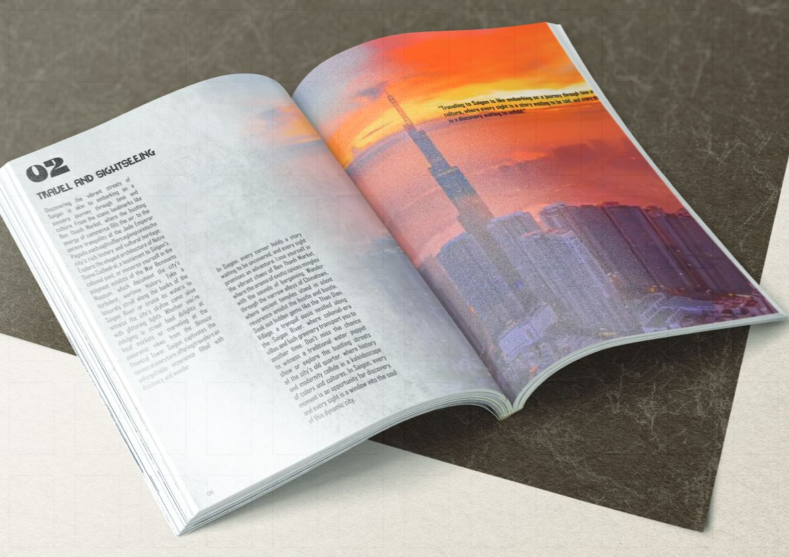
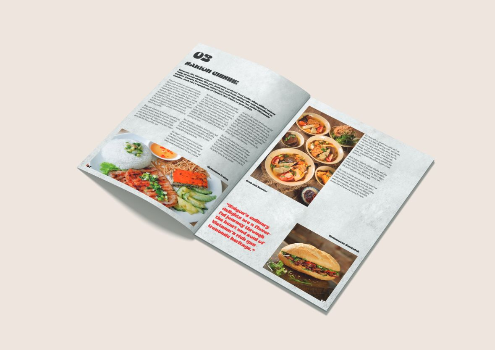
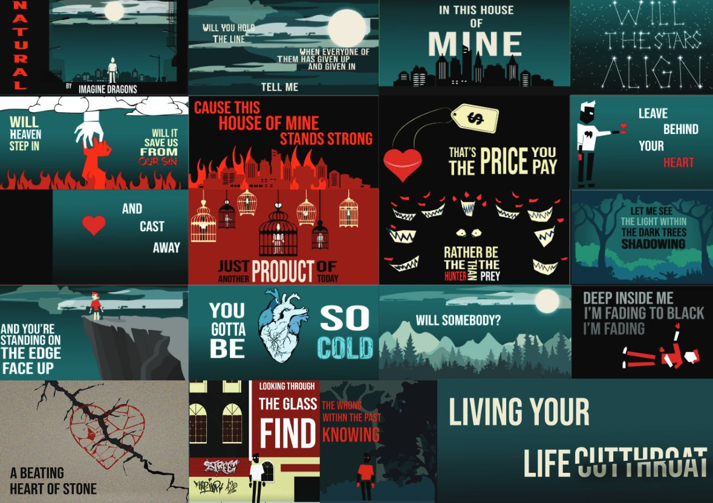
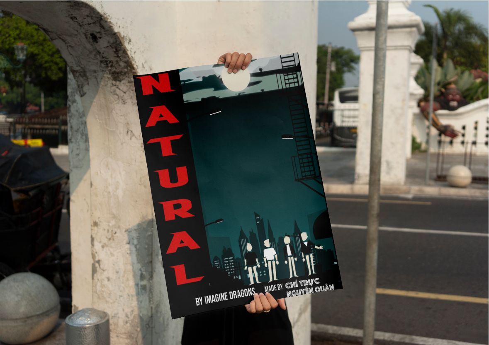
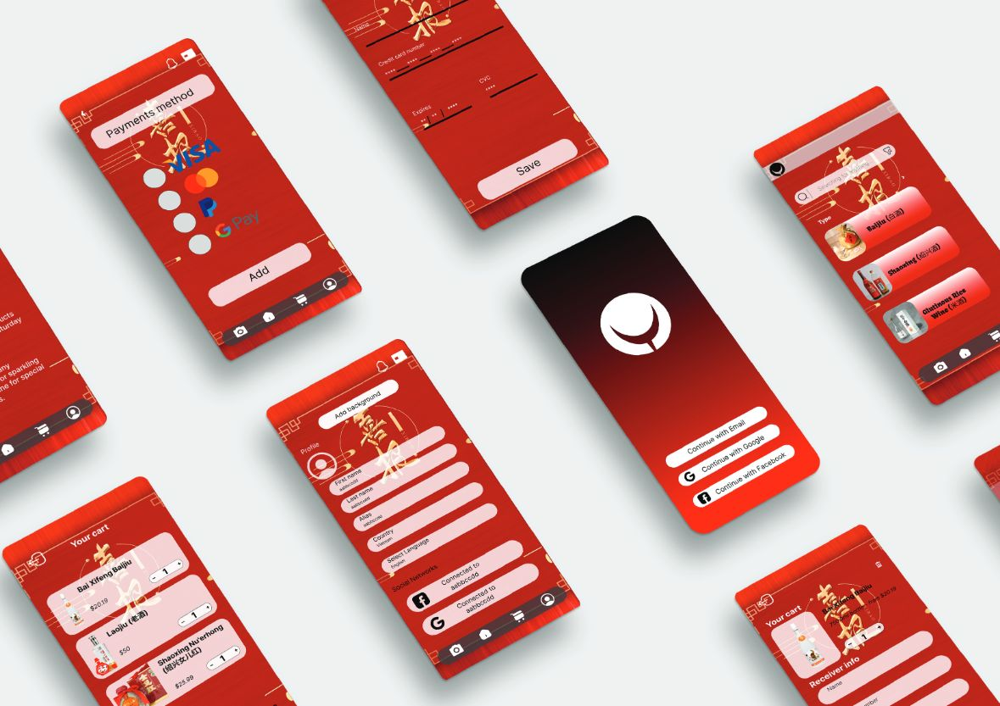
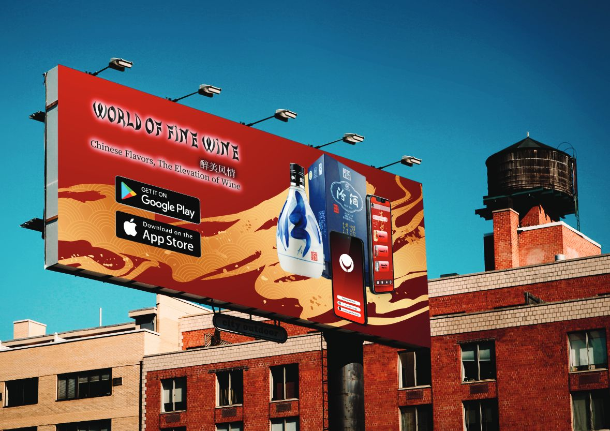
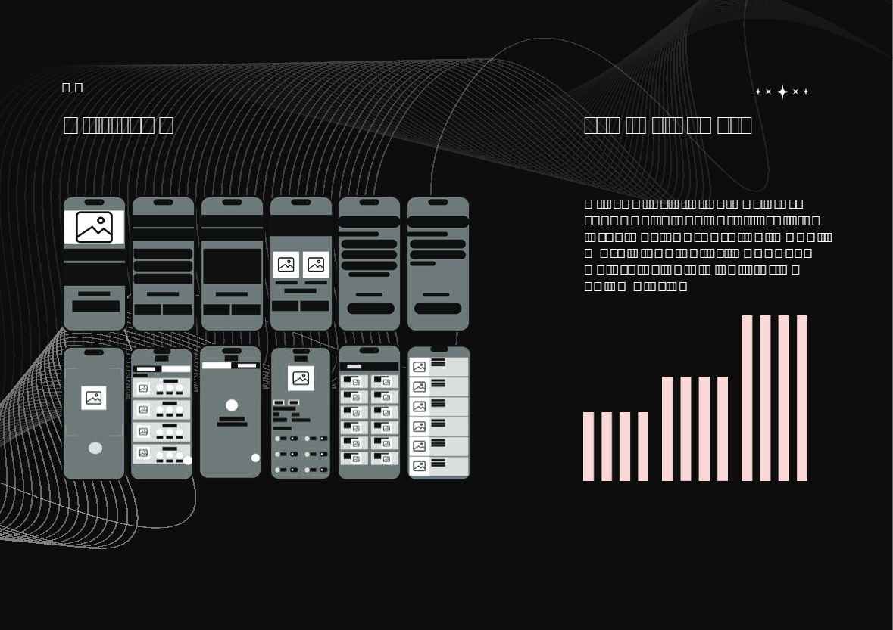
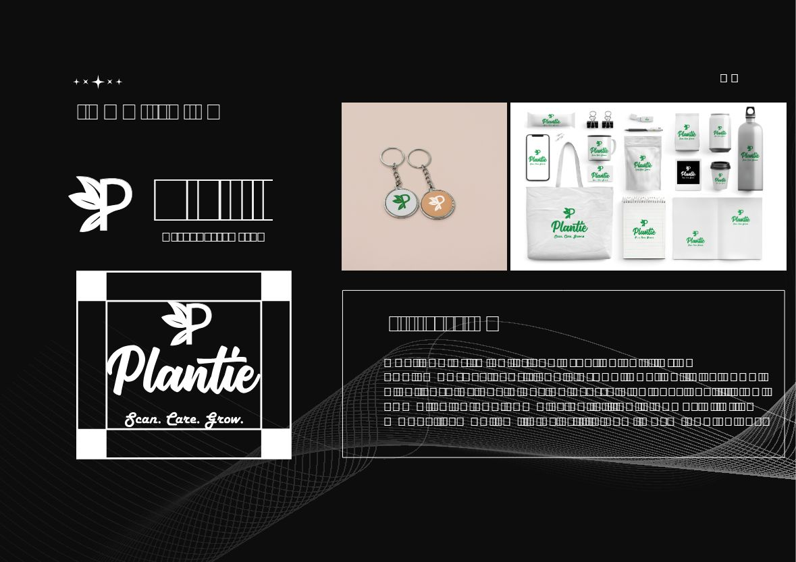

Nguyen Viet Thai Quan
Fresher UI & UX and graphic designer — interface design, wireframing, prototyping.
“I am a fresher UI & UX graphic designer. Despite not having much experience, I'm willing to learn and improve my knowledge. I have a great desire in bringing satisfaction and joy to customers.”

Saigon Magazine
Print editorial bringing Saigon to life — culture, food, and hidden gems for curious travelers. DFVN Austro typeface titles, Agency FB Bold body.
Case notes

- Typography
- DFVN Austro Typeface for titles, Agency FB Bold for body.
- Palette
- Scope
- Cover to cuisine spreads — travel, sightseeing, food chapters.

Natural — Lyric Animation
Saul Bass-style animated frames for “Natural” — inner strength and self-belief, aimed at teens, young adults, and pop-rock fans. Made with Chí Trúc.
Case notes

- Style
- Saul Bass — simple hand-drawn geometry, one dominant image per frame, gothic pop-rock mood.
- Palette
- Credit
- Poster co-made with Chí Trúc.

World of Fine Wine — UX/UI
Mobile app connecting lovers of traditional Chinese wine — sharing knowledge and building a community that sustains the heritage. Adults 18+.
Case notes

- Objective
- Promote and preserve traditional Chinese wine culture through a community app.
- Problem → solution
- Global recognition is low — the app connects enthusiasts, shares knowledge, and keeps improving the experience.
- Palette

Plantie — UX/UI
Smart plant-care app: personalized tips, reminders, and identification. “Scan. Care. Grow.” — 4-column grid wireframes and design system.
Case notes

- Mission → vision
- Help people grow healthy plants with smart support → simplify plant care for everyone. Beginners, busy owners, plant lovers.
- System
- 4-column responsive grid; full logo and brand board — “new, warm and catchy.”
- Palette
Interface Design
Clean, user-first screens.
Wireframing
Structure before pixels.
Prototyping
Clickable flows, tested early.